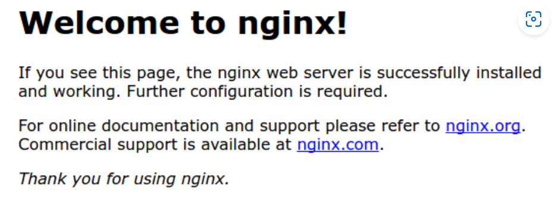

Host a Nginx(EngineX) Web Server in Amazon Web Service (AWS)
Description :
In this article I am giving practical process to host a Ubuntu Nginx server in AWS Ubuntu EC2 Instance. You need an AWS account and a local Ubuntu Machine. I install Ubuntu environment in Windows via WSL.
Introduction:
When we open a url like http://12.45.60.23 in a webbrowser then we send a http request to a machine or server which hosted at ip address 12.45.60.23. The web server also response a http value which render in our webbrowser.But if we open http://domain.com then web browser change corresponding domain into ip address and perform previous job.More secure request is https request.So Before hosting a web server you need a ip address and open portal so that server can receive request.If machine has firewall then firewall shoud allow http, https request for a working server.AWS, Google Cloud, Microsoft Azure are give some virtual machine with assigned ip where we can host our server.In this case I am going to host a linux based ingnx server.
Watch the Tutorial Video
In this video tutorials I setup a ubuntu ec2 instance in aws and then host a ip address based web server on that instance.
AWS Account Setup :
- Creating an AWS account from here
- Creating a Ubuntu 24.04 LTS EC2 Instance and connect and run then install NGINX and run following way
N.B : Don't forget to open port 80 and 443 port during EC2 creation process. Generally, default SSH port is open but you need to check HTTP as well as HTTPS port also.
- After creating Ubuntu EC2 Instances Run following commands in web based EC2 Terminal
sudo apt update
sudo apt upgrade
sudo apt autoclean
sudo apt autoremove
sudo apt install ssh
Installing and Run NGINX Server in Ubuntu 24.4 LTS
SSH Connection:
If You are in Linux machine then you don't need to install WSL but may need to install SSH by sudo apt install ssh and follow.
If you are in Windows machine then you need to install Ubuntu system in your windows machine otherwise you are not able to access all bash commands in Windows terminal.
You need to run following commands in your Windows Terminal which is started as Run as Administrator
wsl --installWhich give available windows sub system option then install ubuntu by following command and install the distro in current directory
wsl --install -d <Distro>Then Set username and password now your machine is ready for SSH
One important thing suppose You want to change directory in a windows path "B:\Web_Projects\aws_project" then you need to type
cd /mnt/b/Web_Projects/aws_project #add /mnt/ before all windows pathSSH Connection:
Suppose You have created and downloaded "keypair.pem" and your public dns id is public_dns then
cd keypair.pem_directory
chmod 400 "keypair.pem" #making executable
sudo apt update #for updating packages
sudo apt upgrade -y #for upgrading packages
sudo apt autoremove -y #for remove broken packages
sudo apt autoclean -y #clean broken packages
sudo apt install ssh #installing ssh in system
sudo ssh -i "keypair.pem" public_dns #access remotely EC2
If You see
ssh: connect to host ec2-**-***-***-***.ap-****-1.compute.amazonaws.com port 22: Network is unreachable
then check network connection, key value pair file location.
NGINX server setup
After making successful SSH connection with your local Linux machine and AWS EC2 then run this commands.
Installing nginx
sudo apt update
sudo apt upgrade
sudo apt install nginx
List of applications are allow by ufw (Firewall service)
sudo ufw app list
Output
Available applications:
Nginx Full
Nginx HTTP
Nginx HTTPS
OpenSSH
Allowing Traffic only on port 80
If you want to open 443 then you need to type sudo ufw allow 'Nginx Full'
sudo ufw allow 'Nginx HTTP'
sudo ufw enable
Checking Status
sudo ufw status
Output
Status: active
To Action From
-- ------ ----
OpenSSH ALLOW Anywhere
Nginx HTTP ALLOW Anywhere
OpenSSH (v6) ALLOW Anywhere (v6)
Nginx HTTP (v6) ALLOW Anywhere (v6)
If output is shown inactive then you need to enable ufw in your instance by sudo ufw enable. After that your EC2 instance not work in browser then you need to access the EC2 instance by SSH through Ubuntu shell.
Checking Web Server
systemctl status nginx
Output
● nginx.service - A high performance web server and a reverse proxy server
Loaded: loaded (/lib/systemd/system/nginx.service; enabled; vendor preset: enabled)
Active: active (running) since Fri 2020-04-20 16:08:19 UTC; 3 days ago
Docs: man:nginx(8)
Main PID: 2369 (nginx)
Tasks: 2 (limit: 1153)
Memory: 3.5M
CGroup: /system.slice/nginx.service
├─2369 nginx: master process /usr/sbin/nginx -g daemon on; master_process on;
└─2380 nginx: worker process
Get Web Server Public IP
curl -4 icanhazip.comSee Your Website on http://your_server_ip
You will see

Success! Congratulations your public website is live.
Add Domain in Your webservice:
First you need to buy a domain from domain selling portal as for example I have purchased a domain from here with cheap price 101 rupees for one year. You can try GoDaddy.com. Once there was Freenom site which gave free domain for one year but now I am not able to get a free domain from there. Custom Webpage with custom domain 'your_domain'.
sudo mkdir -p /var/www/your_domain/html
sudo chown -R $USER:$USER /var/www/your_domain/html
sudo chmod -R 755 /var/www/your_domain
sudo nano /var/www/your_domain/html/index.html
Put custom webpage index.html file inside of /var/www/your_domain/html/
<!DOCTYPE html>
<html lang="en">
<head>
<title>Welcome to your_domain!</title>
</head>
<body>
<h1>Success! The your_domain server block is working!</h1>
</body>
</html>
Press CTRL+X to save the file in nano editor.
sudo nano /etc/nginx/sites-available/your_domainChange your_domain with actual domain name.
server {
listen 80;
listen [::]:80;
root /var/www/your_domain/html;
index index.html index.htm index.nginx-debian.html;
server_name your_domain www.your_domain;
location / {
try_files $uri $uri/ =404;
}
}
Creating a link of /etc/nginx/sites-available/your_domain into /etc/nginx/sites-enabled/ location.
sudo ln -s /etc/nginx/sites-available/your_domain /etc/nginx/sites-enabled/sudo nano /etc/nginx/nginx.confRemove # in front of server_names_hash_bucket_size.
sudo nginx -t #Checking nginx syntax
sudo systemctl restart nginx #restart nginx
Server Log
/var/log/nginx/access.log: Every request to your web server is recorded in this log file unless Nginx is configured to do otherwise./var/log/nginx/error.log: Any Nginx errors will be recorded in this log.
Now Check your online webpage at http://your_domain